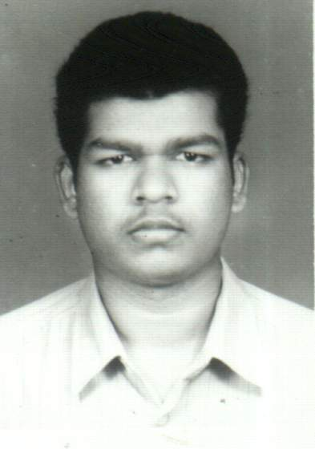
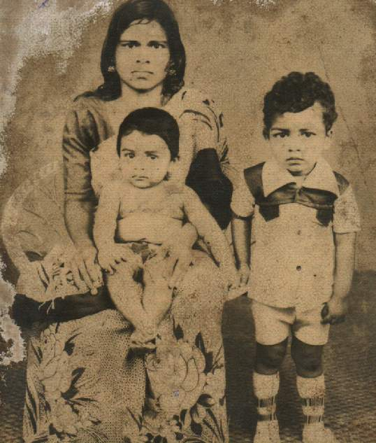
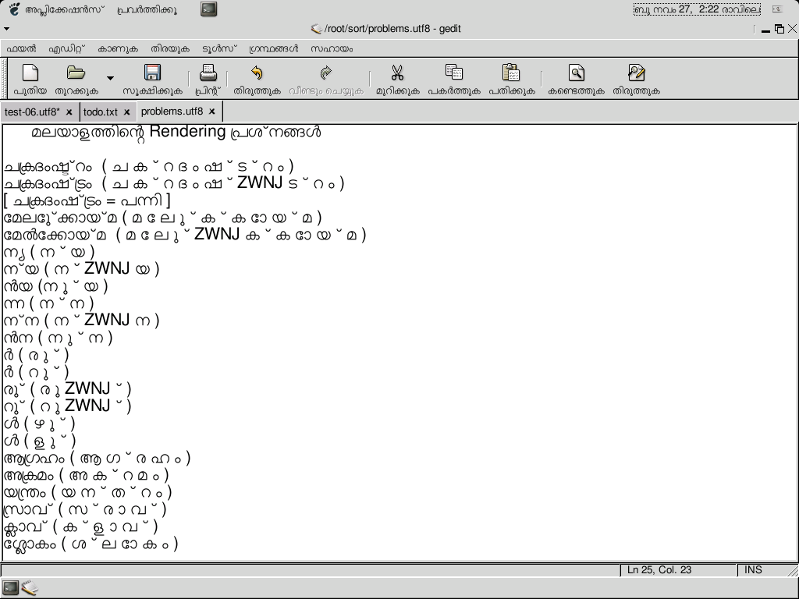
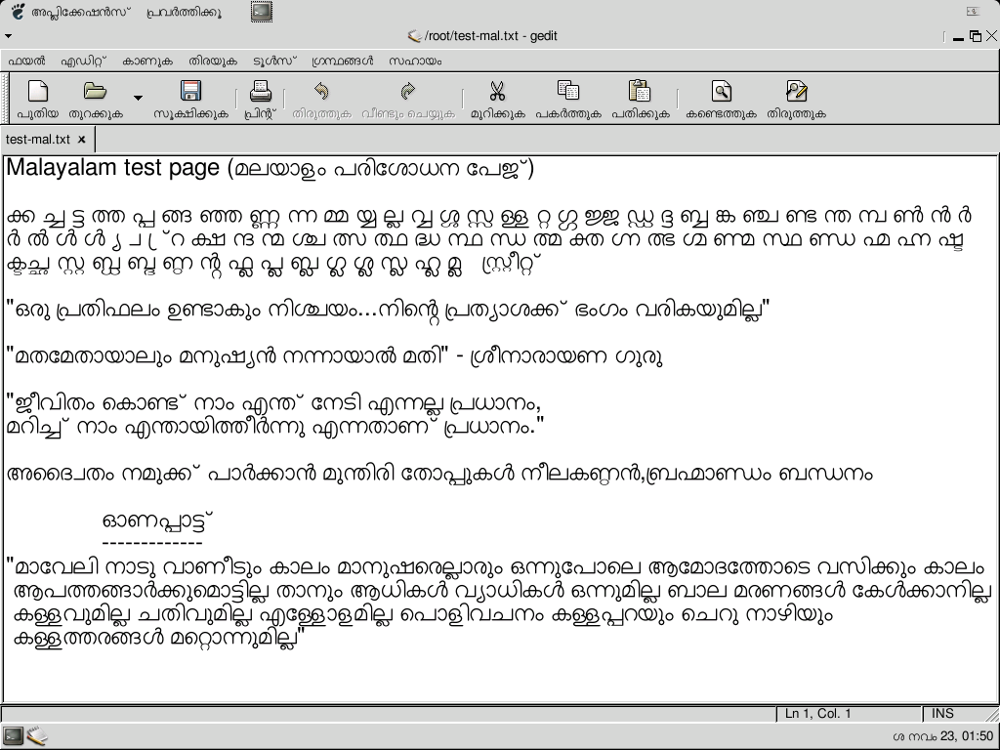
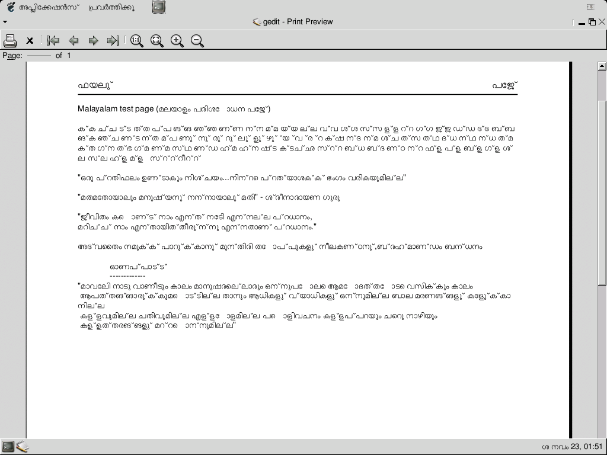

baijum81.tripod.com
Welcome to Baiju's Home Page

This is my personal home page.
Here you can see more about me.
Also about my interests and works.
Copyright (C) 2002 Baiju M <baiju@freeshell.org>
Last updated: 12-07-2002
Navigation on the original site:
Home About Friends 'Free' as in Freedom! Contact Ooty
About

Baiju, standing along with his mother and brother.
(January 1984, Mukkam, Kozhikode)
I'm Baiju M from Areecode. It is a small town at north of Malappuram Dt. in Kerala. Our place is about 50 km away from Calicut. Chaliyar river is passing through our place. I used to spend a lots of time in Chaliyar river with my friends, it is an unforgettable thing in my life.
I studied in three schools just near to my home. Later I joined Malabar Christian College at Kozhikode. I stayed at Govt. Post Metric Hostel during that time. After my pre-degree, again I joined there itself for degree in my favourite subject 'Physics'. Even though my academic performance was very poor.
Because of my unluck (sometimes it might be a luck) I got admission at Regional Engineering College, Calicut (Now the college is re-named as National Institute of Technology). It was a really different surrounding I faced. I saw many faces all over India.
The Story Continues...
During the joining I had an intension to study many languages from my friends, later I found that it is not as simple as that. Even I never used to talk in Hindi, of course I can understand a little bit. REC is more near to my home than MCC. Even though I joined in hostel. I got admission in CIVIL Engg. A lot to say about my life at REC.
Now it is getting to computers. When I was in 9th standard, I joined for a short term course in basics of computers. I studied DOS, Wordstar, fundamentals of BASIC etc. from there. The games like Prince, Car race, Bike race etc. were really interesting at that time. Whenever they allowed, I used to play games.
I lost touch with computers until when we went to FORTRAN practical classes. I had been no idea about UNIX at time, I thought we are going to work on a system which is already known to me. I really wondered, when I seen the black terminals only provided with keyboards. Our teacher provided us a list of UNIX and VI commands. Some PG students helped us to get into the system. Later I known that we were working on a Sun OS.
Again I got interest in computers, I started working on it, whenever I went to Computer Center I studied anything which is new to me. It continued like that... we got login on GNU/Linux machine with internet connection. Only 'lynx' were available to browse. Then we got login on different servers with lots of utilities. Only Civil branch has got login on a GNU/Linux system, all other branch got login on different Solaris machines.
I used to say 'Linux' at that time, freedom was not a matter at that time for me. I also worked on Solaris, Windows 98, NT etc. Irix, OS/2 etc. were there in my college, but I didn't got any chance to work on it.
When we were on final year, a server given to students to set up web server with documents and some mailing lists. Then a new "Linux User Group" formed and many students joined in that group. The mailing list was active for sometime, after few months the server down. I had been posted about GNU/Linux Localization projects and other things to that list.
And lots of other things happened in between this. Now I am a member of Free Software User Group, Kozhikode and a volunteer of Free Software Foundation, India. Now I am working at FSF India in TVM. The story continues.... will write about it after some years (if possible).
Last updated: 03-11-2002. Verbatim copying and distribution of this entire article is permitted in any medium, provided this notice is preserved.
'Free' as in Freedom!
Friends
From friends.html
Ooty Photos
{kind=link}
{kind=link}
SMC Section
The personal site also hosted SMC-related files, including screenshots and Malayalam font source files.
Screenshots

Malayalam rendering
{kind=link}

Malayalam desktop screenshot
{kind=link}

Malayalam print preview
{kind=link}

Malayalam print preview 2
Font Source Files
FontForge (SFD) source files for free Malayalam fonts, and the compiled MalOtf.ttf:
- AkrutiMal1Normal.sfd (307 KB)
- AkrutiMal1Bold.sfd (293 KB)
- AkrutiMal2Normal.sfd (298 KB)
- AkrutiMal2Bold.sfd (294 KB)
- MalOtf.ttf (96 KB) — Compiled OpenType font
Other Files
- diff.txt — Pango patch for Malayalam rendering
- ml — XKB keyboard layout for Malayalam
- smc/index.html — SMC section page
All Recovered Files
/ (root page) • index.html • about.html • story.html • contact.html • friends.html • free-as-in-freedom.html • ooty.html • smc/
Photos
baiju001.jpg • family1.jpg • ooty/18.jpg • ooty/19.jpg
{kind=link}
{kind=link}
SMC Screenshots
mal-01.png • Screenshot-6.png • print-01.png • print-02.png
Font Sources & Data
AkrutiMal1Normal.sfd • AkrutiMal1Bold.sfd • AkrutiMal2Normal.sfd • AkrutiMal2Bold.sfd • MalOtf.ttf • diff.txt • ml (XKB)